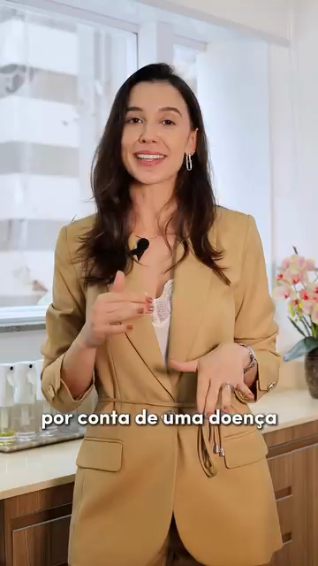
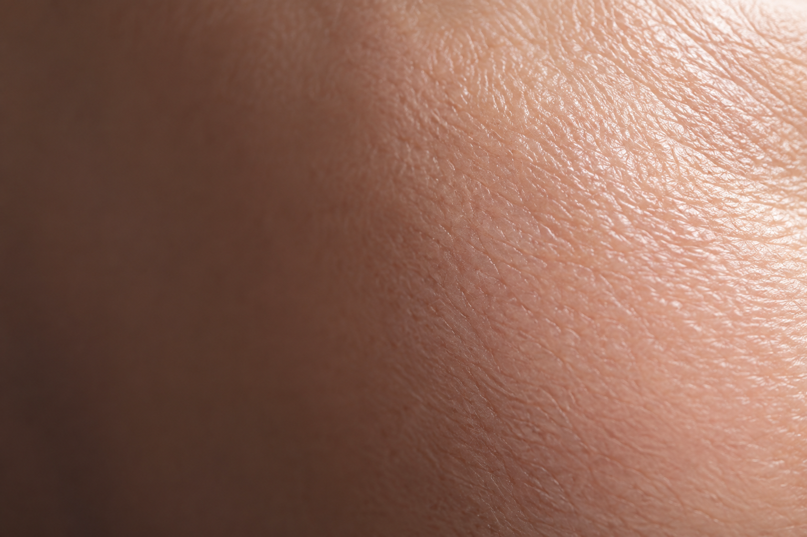
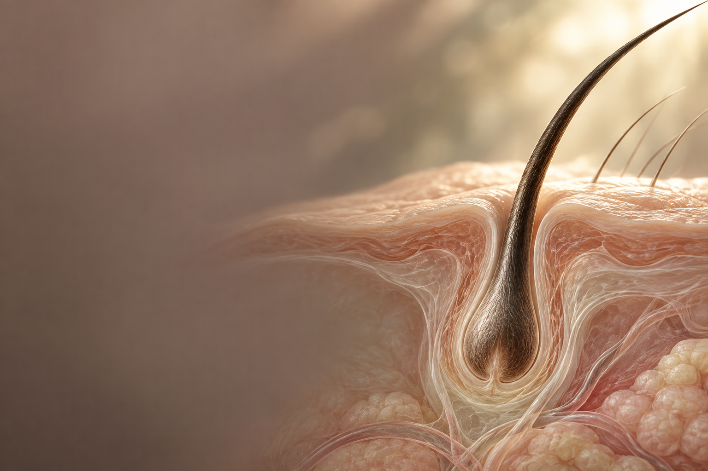

DRA. ANAISA RADDO · DERMATOLOGISTA
Cuidado que
começa nos
detalhes.
Da sua pele aos seus cabelos.
Um olhar atento para você.

DRA. ANAISA RADDO · DERMATOLOGISTA
Da sua pele aos seus cabelos.
Um olhar atento para você.
01 / SUA PELE
A textura, as marcas, as mudanças.
Sua pele merece atenção em cada fase.
02 / SEUS CABELOS
Um olhar para os fios e o couro cabeludo.
Espaço para entender o que mudou.
03 / SUA VIDA
Da prevenção às mudanças que você percebe.
O cuidado faz parte do dia a dia.
UM OLHAR ATENTO
A cirurgia dermatológica e o cuidado dos cabelos são duas grandes paixões na sua trajetória. No consultório, a cosmiatria ganhou espaço a partir da escuta: depois de tratar uma doença, surgiam novas conversas sobre bem-estar e saúde da pele.
Formada em Medicina pela Escola Paulista de Medicina da UNIFESP, fez residência em Dermatologia no Hospital das Clínicas da FMUSP, onde também se aprofundou em Cirurgia Dermatológica e Tricologia.
DERMATOLOGISTA · CRM-SP 162773
AS PAIXÕES QUE GUIAM A PRÁTICA
Áreas que se encontram na trajetória da Dra. Anaisa, com atenção às diferentes razões que levam cada pessoa ao consultório.

O tratamento cirúrgico dos tumores de pele ocupa um lugar especial em sua trajetória, que inclui formação em cirurgia micrográfica de Mohs.

Queda de cabelo, calvície e mudanças nos fios. Queixas que ela gosta de investigar e acompanhar, olhando para a saúde dos cabelos e do couro cabeludo.

O cuidado estético como parte de uma conversa sobre a pele. Uma área que ganhou importância em sua prática a partir das demandas que surgiam no consultório.
A dermatologia também faz parte da sua atuação no acompanhamento de doenças da pele, tanto no consultório quanto em sua trajetória hospitalar.
NAS PALAVRAS DA ANAISA
“Eu vou ter um prazer
enorme em te receber!”
Dra. Anaisa Raddo
Uma conversa sobre o que incomoda, o que mudou e o que você gostaria de cuidar. Esse pode ser o começo.
Acompanhe a Dra. Anaisa no Instagram ↗SEU PRÓXIMO PASSO
Centro Alliance de Medicina
Rua Urussuí, 125 · conjuntos 33 e 34
Itaim Bibi · São Paulo